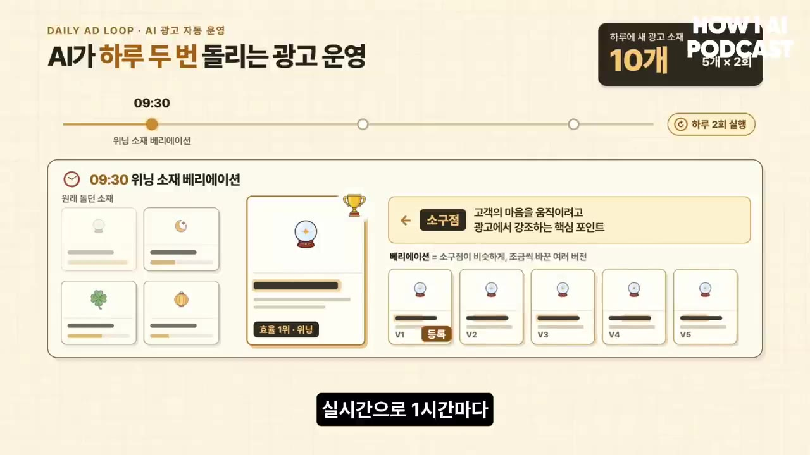
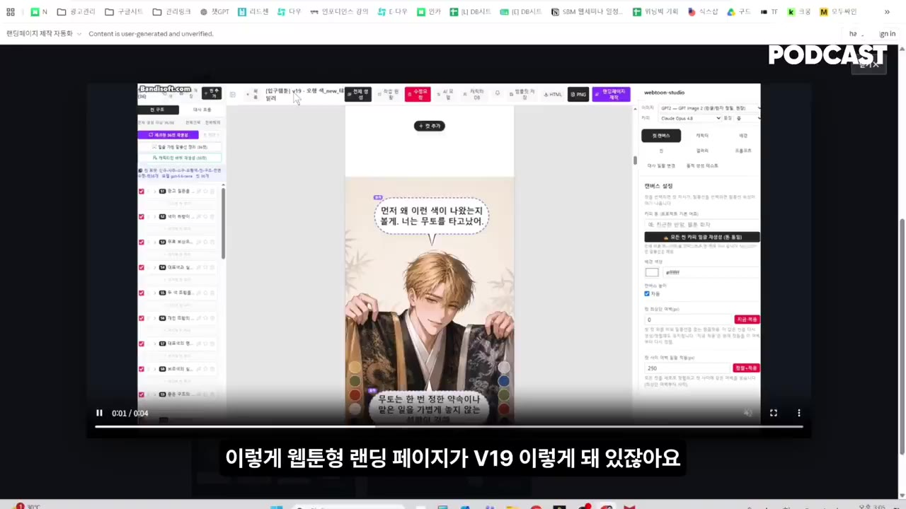
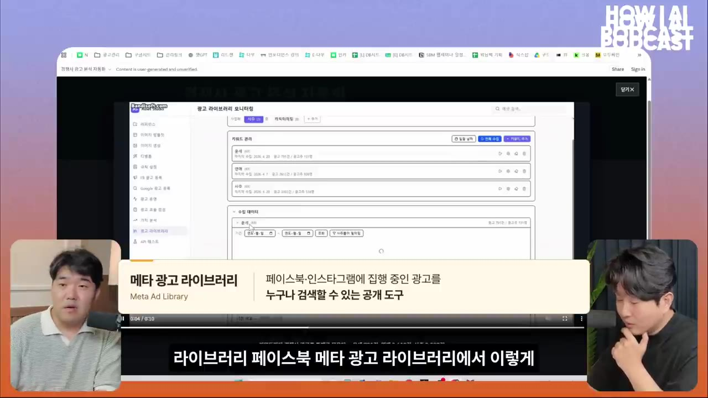
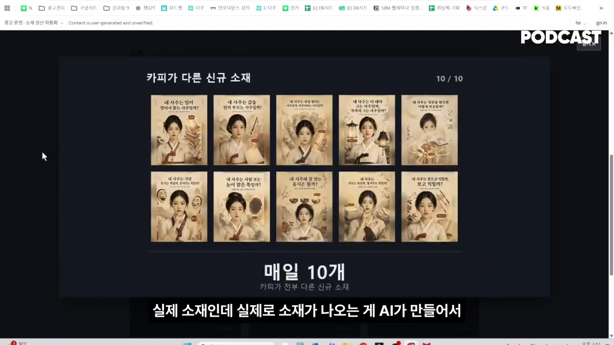
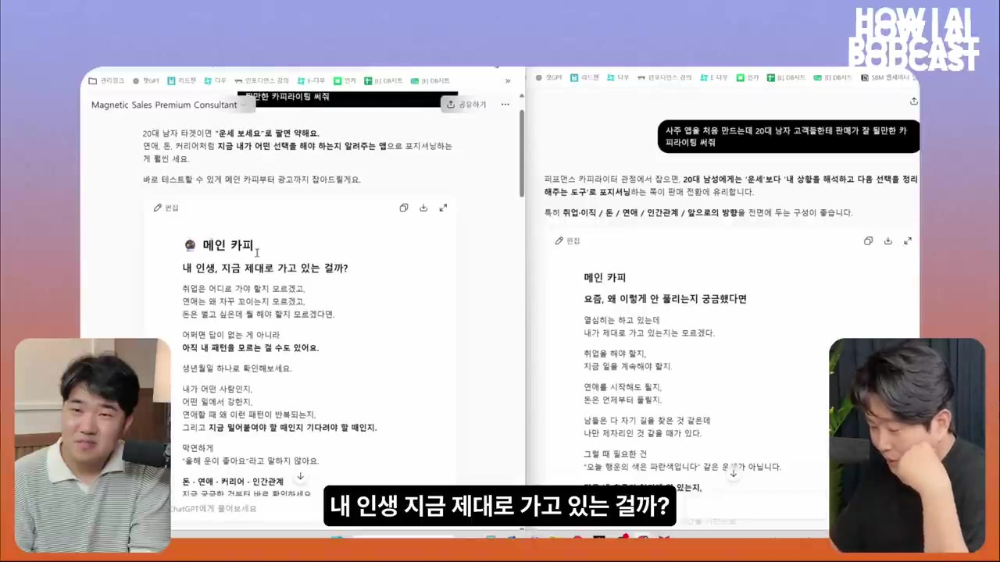
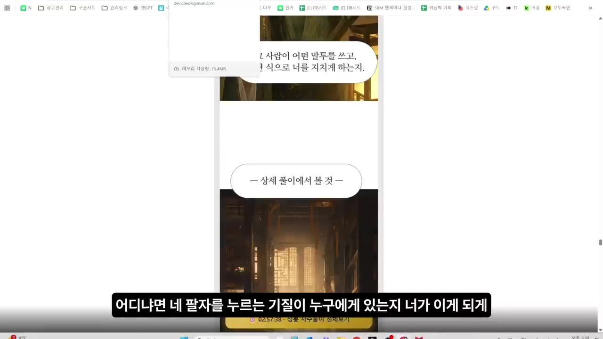
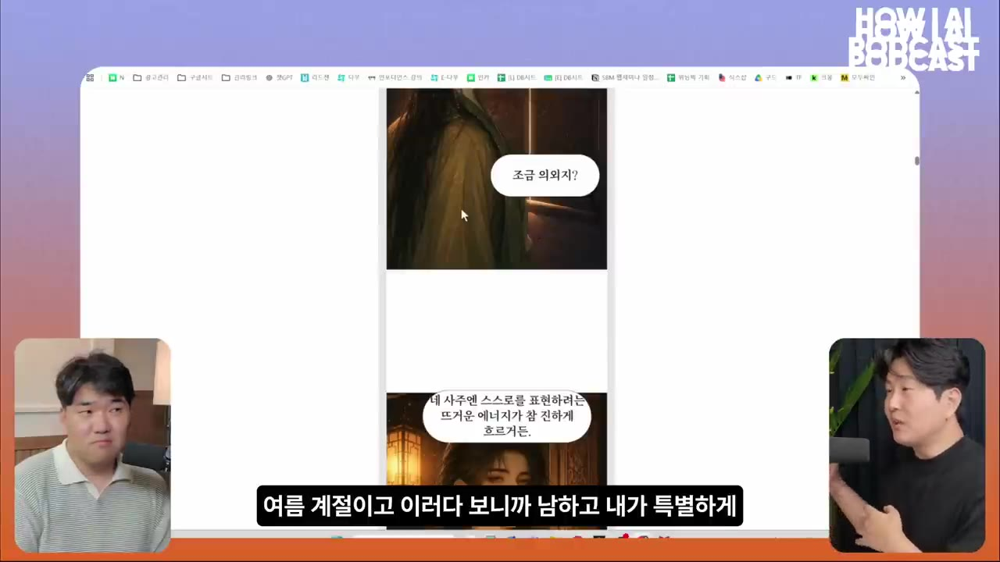
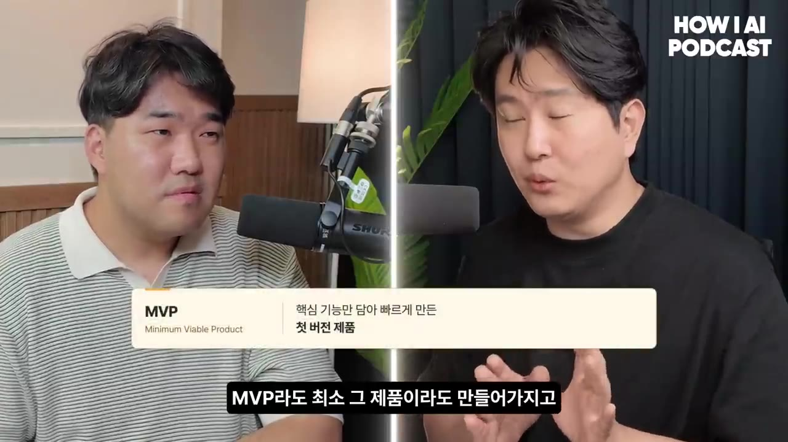

월 1억 광고비를 AI가 굴립니다, 하루 10개 소재 만들고 1시간마다 끄고 켜는 방법 (퍼널랩스 엘런님)
🎙️ 자막 대신 영상 음성을 받아써서 정리 (ko (음성 받아쓰기·GPU))
▶ 원본 영상 보기한눈에 보기
- IT 경험이 없던 팀이 Claude Code만으로 3주 만에 사주 AI 서비스를 출시했고, 첫 30일 동안 매출 약 1억 원을 냈다고 합니다.
- 지금은 월 1억 원쯤의 광고비를 AI가 집행합니다. 하루 10개 소재를 만들어 바로 메타 광고에 올리고, 1시간마다 효율을 보고 끄거나 증액하며, 경쟁사 광고에서 새 소구점(고객을 끌어들일 포인트)을 찾습니다.
- 경쟁 광고가 4~5배로 늘어 매출이 떨어졌을 때, 상품 매력과 세일즈를 다듬어 전환율을 높이는 방법으로 광고 수익을 되살렸습니다.
- 엘런은 파는 기술의 핵심을 "이 말을 들은 고객이 어떤 마음이 들까"를 상상하는 힘이라고 봅니다. 영업 대본과 랜딩페이지는 같은 원리로 짠다고 합니다.
- 노하우를 넣은 GPTs가 일반 GPT보다 타깃을 좁히고 구매로 이어지는 카피를 씁니다. 엘런의 조언은 6개월씩 만들지 말고 빠른 MVP로 고객 반응을 최대한 여러 번 관찰하라는 것입니다.
이런 분께 도움이 됩니다
- 메타(페이스북·인스타그램) 광고를 직접 돌리면서 소재 교체·끄기·증액에 시간을 많이 쓰는 1인 사업자와 마케터에게 맞습니다.
- AI 서비스를 만들었는데 잘 팔리지 않는 분은 카피·랜딩페이지를 설계하는 사고방식과 실제로 잘 된 사례·안 된 사례를 얻을 수 있습니다.
핵심 내용
Claude Code로 3주 만에 출시하고 매출이 오르내린 과정
- 게스트 엘런은 퍼널랩스 대표로, 사주 AI '천기문 AI'(자막 표기)와 AI 캐릭터 채팅을 운영합니다. 취업 교육 사업도 함께 합니다.
- 본명은 자막에 '추진호', 영상 설명에 '추진오'로 적혀 있어 정확한 표기는 확인이 필요합니다.
- 7~8년 동안 여러 아이템으로 사업했지만 IT를 몰라 매출이 일정 수준에서 막혔습니다. AI를 만난 뒤 1~2주 걸리던 기획이 하루 만에 끝났다고 합니다.
- 운영하던 커머스 회사(건강기능식품·화장품)는 공동 창업한 친구에게 넘기고, 오래 함께 일한 팀만 데리고 재창업했습니다.
- Claude Code 전환
- 3주 만에 출시
- 첫 광고 테스트
- 첫 달 매출 1억
- 2월 매출 급감
- 전환율로 회복
- 1Claude Code 전환
11월부터 팀 전원이 일을 무조건 Claude Code로만 하기로 했습니다. 웹 서비스를 운영해 본 사람은 팀에 한 명도 없었습니다. (4:38)
- 23주 만에 출시
"1년 배워서 만들어도 안 팔리면 소용없다"는 생각으로 일단 만들어 팔아 봤습니다.
- 3첫 광고 테스트
첫날이나 둘째 날 광고비 약 30만 원으로 매출 약 100만 원이 나왔습니다.
- 4첫 달 매출 1억
12월 중순 출시 후 30일 동안 매출이 약 1억 원이었습니다. 발송 지연 같은 문제는 전화로 사과하며 수습했습니다.
- 52월 매출 급감
- 6전환율로 회복
상품을 더 매력적으로 다듬고 세일즈를 강화해 매출을 다시 끌어올렸습니다. 경쟁자 수준이 오르면 이 과정을 다시 반복합니다.
같은 유입에서 더 많이 팔면 경쟁 속에서도 광고 수익이 남는다
- 100명이 들어왔을 때 경쟁사가 5개를 팔고 내가 8~10개를 판다고 해 봅니다. 경쟁사는 광고비 100만 원으로 매출 100만 원을 내고, 나는 160만~200만 원을 냅니다. (7:16)
- 경쟁사는 남는 게 없어 광고를 이어 갈 수 없고, 나는 광고로 수익을 낼 수 있습니다.
💡 광고 경쟁이 심해질수록 승부는 유입량보다 전환율(방문자 중 구매자 비율)에서 갈린다.
AI가 광고를 집행하는 하루
- 원리는 단순하다고 합니다. 마케팅팀이 하던 일(효율 좋은 소재 찾기, 경쟁사 반응 분석, 끄기·증액)을 규칙으로 만들어 AI에게 맡겼을 뿐입니다. (8:11)
- AI는 하루 두 번 돌고, 하루에 광고 소재를 10개쯤(5개씩) 만듭니다. (27:00)
- 잘 된 소재 변형
- 1시간마다 판단
- 경쟁사 리서치
- 다음 날 선별
- 1잘 된 소재 변형
오전 9시 30분쯤 기존 소재 중 효율 좋은 것을 골라 비슷하게 변형한 새 소재를 만들어 등록합니다.

09:30 위닝 소재 베리에이션: V1~V5 변형 소재 등록 화면 · ▶ 27:45 - 21시간마다 판단
실시간으로 효율이 나쁜 소재는 끄고, 효율이 나오는 소재는 광고비를 늘립니다.
- 3경쟁사 리서치
11시쯤 경쟁사·경쟁 서비스를 검색합니다. 우리가 안 해 본 소구점·소재·컨셉을 찾으면 카피와 소재를 만들어 등록합니다.
- 4다음 날 선별
새로 올린 것 중 효율이 나와 살아남은 소재만 다시 변형합니다. 이 과정이 매일 반복됩니다. (28:25)
- 퍼포먼스 마케팅팀 2~3명이 하던 분석과 소재 제작을 AI가 대신한다고 합니다.
- 자동화의 절반 이상은 화면 없이 터미널(개발자용 까만 명령 창)에서 AI에게 시켜 돌아갑니다.
소재를 매일 새로 만들어야 하는 이유
- 같은 소재를 계속 쓰면 광고 매체는 관심이 가장 큰 사람부터 보여 줍니다. 그다음에는 관심이 덜한 사람이나 이미 본 사람에게 보여 줄 수밖에 없어 효율이 떨어집니다. (29:20)
- 예: 처음에는 1만 원을 써서 3만 원 매출이 나오다가 2만 5천 원 → 2만 원 → 1만 5천 원으로 떨어집니다.
- 그래서 3만 원이 나오는 새 소재를 계속 찾아야 합니다. 원래 사람 시간이 가장 많이 들던 이 일을 자동화한 것입니다.
💡 ROAS(광고비 대비 매출) 하락은 피할 수 없으니, 새 소재를 찾는 일을 시스템에 맡겨 방어한다.
랜딩페이지 100개 버전: 유입 경로마다 맞는 캐릭터가 따로 있다
- 웹툰형 랜딩페이지가 V19 같은 이름으로 100개 넘게 있습니다. 팀원이 프롬프트를 조금씩 바꾸면 캐릭터와 말투가 다른 버전이 만들어집니다. (31:34)

- 첫 화면은 같고, 사주를 입력한 뒤 나오는 결과 페이지의 캐릭터와 말투가 다릅니다.
- 예: V1은 노란 머리 캐릭터가, V2는 파란 머리 여자 캐릭터가 풀이합니다.
- 버전을 이렇게 많이 만드는 이유는 광고 문구에 따라 들어오는 사람의 취향이 다르기 때문입니다. (32:35)
- 비유: 스타벅스 광고로 들어온 사람에게는 A 캐릭터가 잘 팔리고, 이디야 광고로 들어온 사람에게는 B 캐릭터가 잘 팔립니다.
경쟁사 광고 자동 분석과 검수 없는 소재 등록
- 키워드(예: '운세')마다 메타 광고 라이브러리에서 경쟁사 광고를 통째로 모아 분석합니다. 화면 예시는 791건이었습니다. 그중 우리에게 없던 광고를 찾아 무엇을 새로 만들지 목록을 짭니다. (33:32)

- AI가 만든 소재는 사람이 승인하지 않고 바로 메타 광고에 등록됩니다. (34:25)
- 처음 일주일 정도만 사람이 확인했고, 문제가 없어 그 뒤로는 보지 않습니다.
- 20개를 등록하면 19개 이상은 문제가 없습니다. 1만 원쯤 써 보고 효율이 안 나오면 어차피 꺼지므로, 사람이 소재를 보는 화면(UI)도 아예 없습니다.

- 그냥 AI에게 시키면 효율이 나오지 않습니다. 그래서 광고비 100억 원 넘게 쓰며 쌓은 판단 기준을 넣었습니다. 어떤 관점으로 새 소구점을 고르는지, 카피를 어떻게 쓰고 판매·랜딩페이지와 어떻게 잇는지가 여기에 들어갑니다.
노하우를 넣은 GPTs와 일반 GPT의 카피 비교
- 두 GPT에 같은 질문을 했습니다: "사주 앱을 처음 만드는데 20대 남자 고객들한테 판매가 잘 될 만한 카피라이팅 써줘" (36:08)
| 구분 | 일반 GPT | 세일즈 노하우를 넣은 GPTs |
|---|---|---|
| 메인 카피 | "요즘 왜 이렇게 안 풀리는지 궁금했다면" | "내 인생, 지금 제대로 가고 있는 걸까?" (질문형) |
| 본문 흐름 | "오늘의 행운의 색은 파란색입니다 같은 운세가 아닙니다"처럼 뻔한 영업 멘트 | 취업·연애·돈 고민을 짚고 "답이 없는 게 아니라 아직 내 패턴을 모르는 걸 수도 있어요"로 이어 감 |
| 행동 유도 | 약함 (진행자 평: "평이하다", "돈을 쓰고 싶진 않다") | "생년월일 하나로 확인해 보세요", "지금 궁금한 것부터 바로 확인하세요" |

- "메인 카피를 그렇게 쓴 이유가 뭐야?"라고 묻자 GPTs는 이렇게 답했습니다. (37:45)
- 사주를 보고 싶은 사람이 아니라 "내 인생이 왜 이렇게 애매하지"라고 느끼는 사람을 노렸다는 것입니다.
- 목표는 무료 사주를 본 뒤 유료 사주까지 사는 사람입니다. 이런 사람은 결정하기 어려운 고민이 있을 때 들어올 가능성이 큽니다.
- 무료 사주를 볼 확률이 비슷하더라도 "내 얘기네" 하는 사람만 걸러 들어오게 해 구매 확률을 높인다는 설명입니다. 20대 남성 전체를 노리지 않았습니다.
💡 노하우가 들어간 AI는 타깃을 좁혀 '살 사람'을 골라내는 카피를 쓴다.
잘 된 랜딩페이지와 안 된 랜딩페이지
- 처음에 잘 되다가 효율이 떨어진 사례 (웹툰형 "네 팔자가 궁금했구나") (41:43)
- 먼저 사주가 좋다고 말해 줍니다.
- 이어서 "너에게 특별한 면이 있는데 그걸 누르는 기질이 누구에게 있는지, 어떤 상황에서 잠재력을 못 펴는지"를 언급합니다.
- 핵심은 "여기서 말하기 복잡하니 상세 풀이에서 알려 주겠다"며 구매로 연결한 것입니다.
- 단순히 자세히 설명하거나 오행(토·목 등)만 보여 줄 때보다 구매 확률이 훨씬 높았습니다.

- 처음부터 안 된 사례 (계절 풀이) (42:59)
- 이 페이지는 "사람에게도 저마다 타고난 계절이 있어 — 너는 한여름"처럼 사주를 계절로 풀었습니다.
- 계절은 4개 중 하나라서 "여름인 사람은 엄청 많겠네"라는 느낌을 줍니다. 나만 특별하다는 느낌이 없어 반응이 없었습니다.

- 결과 페이지 문구는 고정이 아니라 사람의 사주마다 즉석에서 만들어집니다.
- 사주에서 메인 포인트를 고르는 로직 → 그 포인트로 카피를 만드는 로직 → 캐릭터가 말하도록 합성하는 순서입니다.
💡 특별함과 궁금증을 주는 풀이는 팔리고, 누구에게나 해당하는 분류는 팔리지 않는다.
파는 기술의 핵심: 고객 마음에 대한 상상력
- 엘런은 파는 기술을 "어떤 상황에서 내가 이 말을 했을 때 고객이 어떻게 생각할까"를 상상하는 힘이라고 봅니다. (9:16, 17:40)
- 처음 해 본 마케팅에서 그림판으로 만든 투박한 소재로도 매출이 나온 이유가 여기에 있다고 합니다.
- 그는 이런 질문을 체크리스트로 삼았습니다. 누가 이 광고를 볼까, 클릭한 뒤엔 무슨 생각이 들까, 이 문구를 보면 어떤 마음일까.
- 목표는 랜딩페이지 끝에서 고객이 "이게 내가 찾던 거네"라고 느끼는 상태입니다.
- 커피 예시: 랜딩페이지가 끝날 때 고객이 이미 "커피 마시고 싶었는데" 하는 상태여야 합니다. 그러려면 어떤 사람을 데려오고 어떤 말을 보여 줘야 할지 바꿔 보고 상상하기를 반복합니다.
- 영업 대본과 랜딩페이지는 같은 원리입니다. 아웃바운드 전화는 대부분 내가 말하므로 "이 말을 하면 고객이 어떤 생각을 할까"를 상상합니다. 이것은 "이 문구를 보면 어떤 생각을 할까"와 완전히 같은 질문입니다. (19:49)
- 말 못 하던 20대
- 오피스텔 텔레마케팅
- 4달 반 동안 계약 0건
- 대본 수천 개 A/B 테스트
- 월 1,000만 원 달성
- 첫 창업과 페이스북 광고
- 여러 사업 후 AI로
- 1말 못 하던 20대
친척에게 "자폐 같다"며 병원에 가 보라는 말을 들을 만큼 말이 어눌했다고 합니다.
- 2오피스텔 텔레마케팅
22~23살에 사무직인 줄 알고 갔다가 2억 원짜리 오피스텔 분양을 전화로 팔게 됐습니다. 기본급은 없고 계약 1건에 200만~300만 원을 받는 구조였습니다.
- 당시 아르바이트 월급은 80만 원이었고, 같은 회사의 21살 직원이 월 1,000만 원을 버는 것을 보고 동기를 얻었습니다.
- 34달 반 동안 계약 0건
실장에게 "잘못 뽑았다"는 말까지 들었지만 매일 대본을 썼습니다.
- 4대본 수천 개 A/B 테스트
휴대폰·카드·보험 콜센터에서 컴퓨터로 대본을 쓰고 출력했습니다. 인사·상품 소개·계약 제안 멘트의 단어마다 속도·강세를 색깔·굵기·물결 표시로 바꿔 가며 실험했습니다.
- 대상은 관심 없는 사람에게 거는 콜드콜이었습니다. 지루해지면 바로 끊기 때문에 흥미를 유지하는 말을 찾는 감각이 길러졌습니다.
- 5월 1,000만 원 달성
수입이 200만 원대 → 300만 원 → 500만 원 → 1,000만 원으로 올랐습니다.
- 6첫 창업과 페이스북 광고
30살에 임원으로 공동 창업했습니다. 자본금 100만 원 중 50만 원이 남은 상태에서, 크몽에서 산 19,000원짜리 가이드북으로 일주일간 광고를 세팅했습니다.
- 첫 달 매출 약 500만 원, 다음 달 1,000여만 원, 6개월 뒤 월 1억 5천만~1억 6천만 원을 냈습니다.
- 7여러 사업 후 AI로
광고 대행, 스마트스토어, 화장품 방문판매, 취업·입시 교육, 콜센터, 건강기능식품, PDF 판매, 마케팅 교육을 거쳐 AI 사업에 이르렀습니다.
경험이 쌓이면 A/B 테스트 횟수가 줄어든다
- 감각이 없는 사람은 후보 100개(예: 커피 브랜드 100개)를 다 테스트해야 합니다. 감각이 있으면 반응이 클 만한 3~4개(예: 스타벅스, 이디야)부터 시작합니다. (20:38)
- 성공 확률 1%인 사람과 10%인 사람은 차이가 엄청납니다. 확률을 높여 놓고 시작하면 테스트 횟수가 줄어듭니다. (21:52)
- 영향이 큰 곳부터 테스트합니다. 광고 카피에서 고객이 처음 만나는 부분, 랜딩페이지 헤드 카피(맨 위 핵심 문구)가 우선입니다.
- 엘런은 "5번 안에는 답을 찾는다"고 보고 이틀에 한 번씩 바꿉니다. 길어도 10일이면 효율을 찾겠다고 계산하고 실행에 들어갑니다.
AI 레버리지: 반복 업무는 AI에게, 돈 버는 구조는 대표가
- 8시간 중 7시간은 광고 운영·문서 작업처럼 더 열심히 해도 매출이 늘지 않는 일입니다. 이런 일은 AI에게 맡기고, 나머지 1시간을 플러스 알파를 만드는 고민에 쓰게 해 준다는 것입니다. (39:18)
- "돈은 대표가 벌어 온다"는 것이 엘런의 생각입니다. 직원처럼 AI도 알아서 돈을 벌어 오지는 않습니다. 원래 돈 벌 능력이 있는 사람이 그 방식을 AI로 5인분, 10인분으로 늘리는 것입니다. (40:14)
- 인력 기반이라 불가능했던 사업이 가능해집니다. 인건비 100만 원이 들고 매출이 50만 원이던 일을 AI로 1만~2만 원에 할 수 있다면 사업이 됩니다. (41:12)
- 예: 사람이 쓰는 100페이지 사주 리포트를 3만 원에 파는 것은 말이 안 되지만, AI가 쓰면 가능합니다.
AI 콘텐츠 시장을 택한 이유와 리텐션 대비
- AI가 발전해 일하는 사람이 줄면 사람들은 놀고, 실내에서는 콘텐츠를 소비할 것이라고 봅니다. 그 콘텐츠를 AI가 만드는 영역에서 영향력을 갖는 것이 큰 기회라고 판단했습니다. (23:40)
- AI로 제품 만들기가 쉬워지면 모든 서비스에서 사주처럼 경쟁자가 급증할 것이라고 예상합니다. 결국 광고비 100만 원으로 그 이상 매출을 내기 어려운 시기가 온다고 봅니다. (25:47)
- 그때는 한 번 온 고객이 계속 쓰는 서비스만 살아남는다고 봅니다. 그래서 지금부터 내년에도 계속 쓰게 하는 리텐션(재이용) 구조를 준비한다고 합니다.
판매 능력을 키우는 법
- 엘런의 '세일즈 퍼널 마스터클래스'(약 2달 반~3달)를 한 문장으로 줄이면 "어떻게 하면 내 제품을 사고 싶게 만들까"입니다. 이 문제가 풀리면 대부분의 사업이 풀린다고 합니다. (45:39)
- 처음 해 보는 운동처럼 판매 능력도 처음엔 없는 것이 당연합니다. 첫 스파링에서 졌다고 "재능이 없다"고 결론 내리지 말라고 합니다.
- 6개월~1년씩 서비스를 만들지 말라고 권합니다. 최소한의 MVP(최소 기능 제품)로 일단 고객을 모아 보고, 완벽하지 않은 제품에 고객이 불평하는 것도 과정이라고 봅니다. (48:16)

- "이렇게 했더니 이렇게 되네"를 관찰하는 횟수를 최대한 늘리는 로드맵과 액션 플랜을 짜라고 합니다.
따라 해보기
준비물
- 메타 광고 계정과 운영 중인 상품·서비스, 그리고 랜딩페이지가 필요합니다.
- Claude Code가 필요합니다. 영상의 팀은 업무 전부를 Claude Code로 했습니다. 유료 구독 여부와 요금은 영상에 나오지 않습니다.
- ChatGPT 맞춤 GPT(GPTs) 기능은 카피 비교 실험에 씁니다. 맞춤 GPT를 만들려면 보통 유료 플랜이 필요합니다(보충).
- 엘런이 공개한 자동화 자료는 영상 설명란 링크(funnellabs.app/s/josh)에 있습니다.
- 처음 일주일은 AI가 만든 소재를 사람이 검수할 시간이 필요합니다.
단계별 방법
- 운영 규칙 적기
- 노하우 GPTs 만들기
- 카피 비교 테스트
- 변형 소재 등록
- 1시간마다 판단
- 경쟁사 리서치
- 살아남은 것 반복
- 1운영 규칙 적기
지금 사람이 하는 판단을 글로 적습니다. 어떤 소재를 끄는지, 언제 증액하는지, 새 소구점을 어떤 기준으로 고르는지입니다. (8:11)
- 2노하우 GPTs 만들기
카피를 쓰는 기준과 판매·랜딩페이지로 잇는 방법을 지침에 넣은 맞춤 GPT를 만듭니다. 지침 원문은 영상에 나오지 않습니다.
- 3카피 비교 테스트
일반 GPT와 내 GPTs에 같은 질문을 하고, "메인 카피를 그렇게 쓴 이유가 뭐야?"로 노린 타깃을 비교합니다. (36:08)
- 4변형 소재 등록
매일 오전 효율 좋은 기존 소재를 변형해 새 소재 약 5개를 메타 광고에 올립니다. 처음 일주일은 사람이 검수합니다.
- 51시간마다 판단
효율이 나쁜 소재는 끄고 좋은 소재는 증액합니다. 새 소재는 1만 원쯤 써 본 뒤 판단합니다.
- 6경쟁사 리서치
메타 광고 라이브러리에서 키워드로 경쟁사 광고를 모아, 내가 안 해 본 소구점으로 소재 약 5개를 더 만듭니다. (33:32)
- 7살아남은 것 반복
다음 날 효율이 나온 소재만 다시 변형합니다. 이 순서를 매일 돌립니다.
3단계에 입력할 내용 (영상에서 쓴 질문, 업종만 내 상품으로 바꿔 씁니다)
사주 앱을 처음 만드는데 20대 남자 고객들한테 판매가 잘 될 만한 카피라이팅 써줘
메인 카피를 그렇게 쓴 이유가 뭐야?
따라 할 수 있는지 점검
- ✅ 바로 따라 할 수 있는 단계: 1단계 「운영 규칙 적기」, 3단계 「카피 비교 테스트」, 6단계 중 메타 광고 라이브러리에서 경쟁사 광고를 직접 찾아보는 부분.
- ⚠️ 2단계 「노하우 GPTs 만들기」: GPTs에 넣은 지침 원문이 공개되지 않았습니다. → 설명란 링크(funnellabs.app/s/josh)의 자료에 들어 있는지 확인합니다. 없으면 내 판매 경험과 잘 된 카피·안 된 카피 사례를 직접 정리해 넣습니다.
- ⚠️ 4·5단계 「변형 소재 등록」「1시간마다 판단」: AI가 메타 광고에 직접 소재를 올리고 끄고 증액하는 연결 방법이 영상에서 생략됐습니다. 사용한 API, 권한 설정, 실행 스케줄러가 나오지 않습니다. → 메타 마케팅 API로 광고 계정에 연결하고 정해진 시각에 스크립트를 실행하는 구성이 일반적입니다(보충). 설명란 자료를 먼저 확인하세요.
- ⚠️ 5단계 「1시간마다 판단」: "효율이 나쁘다/좋다"를 가르는 기준(ROAS 몇 이상 등)과 증액 폭이 나오지 않습니다. → 내 상품의 손익분기 ROAS를 계산해 기준을 직접 정해야 합니다(보충).
- ⚠️ 6단계 「경쟁사 리서치」: 광고 라이브러리 수백 건을 자동으로 모으는 방법이 화면 결과(791건)로만 나오고 수집 방법은 생략됐습니다. → 처음엔 수동으로 검색해 소구점을 목록으로 만든 뒤 Claude에게 분석시키는 방식으로 시작할 수 있습니다(보충).
- ⚠️ 랜딩페이지 100개 버전: 사주 입력 → 포인트 선정 → 카피 생성 → 캐릭터 합성 로직은 구조만 설명됐고, 프롬프트와 개발 방법은 나오지 않습니다.
- ❓ 소재 생성을 "하루 두 번, 5개씩"이라고 했는데, 9시 30분 변형분과 11시 경쟁사 분석분이 그 두 번을 말하는지는 자막상 불분명합니다.
확인 방법
- 3단계에서 내 GPTs의 카피가 질문형으로 시작하고, 넓은 타깃이 아니라 "구매할 만한 사람"을 좁혀 노리는지 확인합니다.
- 자동화를 돌린 뒤 광고 관리자에서 효율이 나쁜 소재가 실제로 꺼지고 효율 좋은 소재의 예산이 늘었는지 확인합니다.
- 매일 새 소재가 추가되고, 전체 ROAS가 같은 소재만 돌릴 때보다 덜 떨어지는지 봅니다.
막히면
- AI에게 그냥 시키기만 하면 효율이 나오지 않습니다. 판단 기준(노하우)을 넣는 것이 핵심이라고 합니다.
- 처음부터 검수를 빼지 말고, 약 일주일은 사람이 확인해 문제가 없는지 본 뒤 자동 등록으로 바꿉니다.
- 이미 잘 되는 소재도 같은 것만 계속 돌리면 효율이 떨어집니다. 새 소재를 계속 넣어 줘야 합니다.
- 랜딩페이지는 계절처럼 누구에게나 해당하는 분류를 피하고, "나만 특별하다"는 느낌과 궁금증을 줘야 구매로 이어집니다.
기억할 숫자·인용
- 3주 만에 출시했습니다. 광고비 약 30만 원으로 매출 약 100만 원, 첫 30일 매출 약 1억 원을 냈습니다.
- 2월에는 경쟁사 광고 개수가 2~3개월 전의 4~5배로 늘었습니다.
- 100명 중 5개 대신 8~10개를 팔면 광고비 100만 원으로 매출 160만~200만 원이 나옵니다.
- 월 광고비 약 1억 원을 AI가 집행하고, 소재를 하루 10개 만들며, 1시간마다 끄거나 증액합니다.
- 퍼포먼스 마케팅 인력 2~3명분의 일을 AI가 합니다.
- 소재 20개 중 19개 이상은 문제가 없고, 새 소재는 1만 원쯤 써 보고 판단합니다.
- 랜딩페이지는 100개 넘는 버전이 있고, 화면 예시의 경쟁사 광고 분석은 791건이었습니다.
- 엘런이 노하우를 쌓으며 쓴 광고비는 100억 원이 넘습니다.
- 사람이 쓰면 불가능한 100페이지 사주 리포트를 AI로 3만 원에 팝니다.
- "파는 기술은 고객이 어떤 마음이 들까에 대한 상상력이다."
- "6개월, 1년 동안 서비스 만들지 마시고 최대한 빠르게 MVP라도 만들어 일단 고객을 모으는 것부터 해보세요."
생각해볼 점
- 매출 1억 원, 광고비 월 1억 원 같은 수치는 게스트 본인의 말이고 순이익·환불률은 나오지 않았습니다. 광고비 규모와 비교하면 실제 수익성은 따로 확인이 필요합니다.
- 사람 검수 없이 소재를 자동 등록하는 방식은 효율 면에서는 합리적입니다. 다만 과장 광고·광고 정책 위반 소재가 섞이면 계정 제재 위험이 있으므로, 작은 사업자는 최소한의 필터 규칙을 두는 편이 안전해 보입니다. 이것은 내 의견입니다.
- 엘런의 강점은 10년 영업 경험이라는 암묵지입니다. 같은 자동화 구조를 가져다 써도 판단 기준이 약하면 결과가 다를 수 있다는 점을 영상 스스로 인정합니다. 사주 서비스 특성상 "특별함·궁금증으로 구매를 유도하는" 방식이 다른 업종에도 그대로 통할지는 검증이 필요합니다.
바로 해볼 일
- 일반 ChatGPT와 내 노하우를 적어 준 대화에 "내 상품을 ○○ 고객에게 판매가 잘 될 카피 써줘"와 "메인 카피를 그렇게 쓴 이유가 뭐야?"를 똑같이 묻고 결과를 비교하기
- 메타 광고 라이브러리에서 내 업종 키워드로 경쟁사 광고를 20개쯤 보고, 내가 안 써 본 소구점 3개 적기
- 지금 손으로 하는 광고 운영 판단(끄는 기준, 증액 기준)을 한 장짜리 규칙 문서로 적기